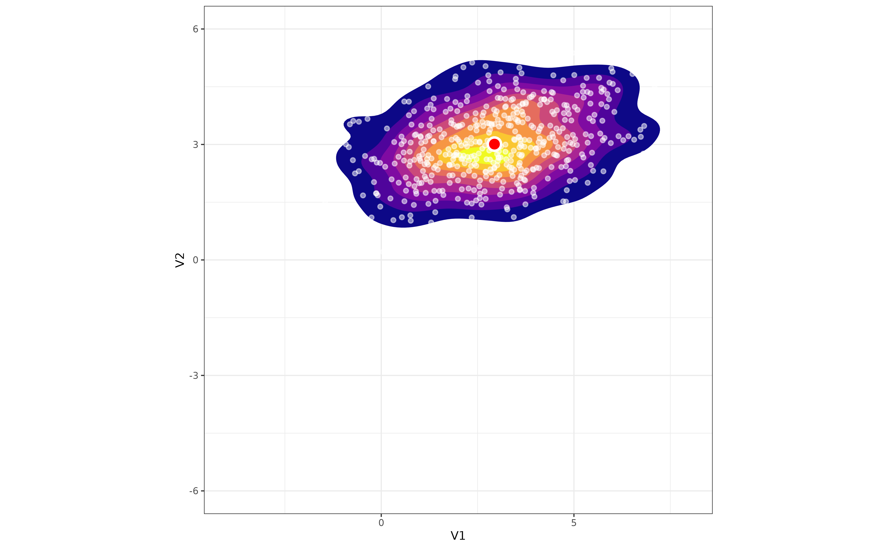
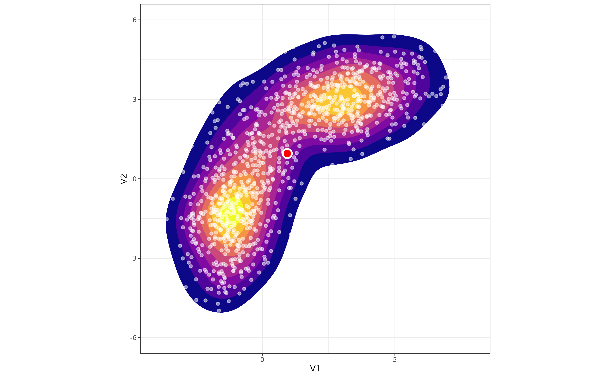
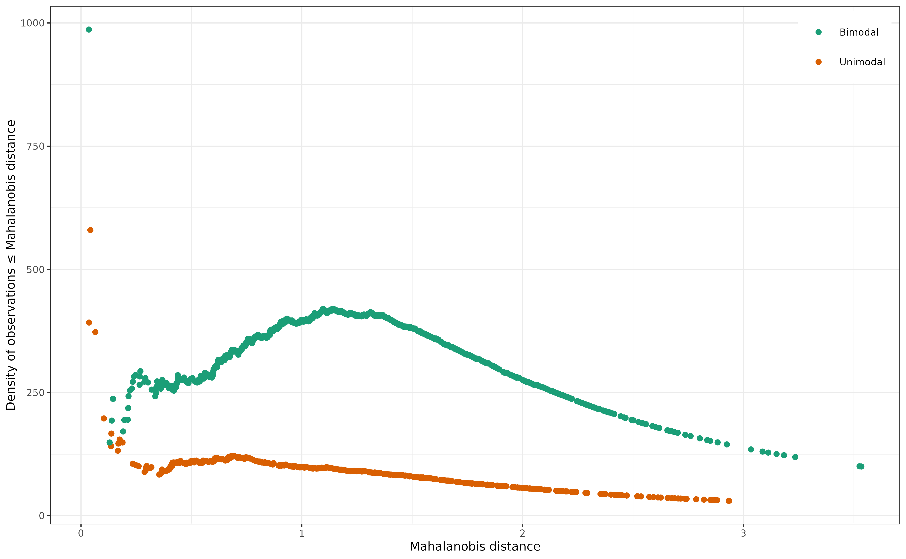

How the boringness index is constructed
Simon Garnier
2024-05-10
explainer.RmdThis vignette explains how the boring function computes
the boringness index.
At the core of the boringness index is the idea that the density of observations should decrease monotically as one moves away from the center of mass of a unimodal distribution. Take for instance the following bivariate random Gaussian distribution:
mu1 <- c(3, 3)
sigma1 <- matrix(c(3, 0.5, 0.5, 1), 2, 2)
distr1 <- as.data.frame(mvrnorm(500, mu1, sigma1))
com1 <- apply(distr1, 2, mean)
ggplot(distr1) +
aes(x = V1, y = V2) +
stat_density_2d(aes(fill = after_stat(level)),
geom = "polygon",
n = 100, bins = 10, show.legend = FALSE
) +
geom_point(color = "white", size = 1, alpha = 0.5) +
geom_point(
x = com1[1], y = com1[2], shape = 21,
color = "white", fill = "red", size = 3, stroke = 1
) +
coord_equal(xlim = c(-4, 8), ylim = c(-6, 6)) +
scale_fill_viridis_c(option = "plasma") +
theme_bw(base_size = 7)
As you can see, the density of points decreases more or less regularly around the center of mass of the distribution (the red dot). Let’s add a second distribution to the mix, different from the first one, and plot the result:
mu2 <- c(-1, -1)
sigma2 <- matrix(c(1, 0.5, 0.5, 3), 2, 2)
distr2 <- rbind(distr1, as.data.frame(mvrnorm(500, mu2, sigma2)))
com2 <- apply(distr2, 2, mean)
ggplot(distr2) +
aes(x = V1, y = V2) +
stat_density_2d(aes(fill = after_stat(level)),
geom = "polygon",
n = 100, bins = 10, show.legend = FALSE
) +
geom_point(color = "white", size = 1, alpha = 0.5) +
geom_point(
x = com2[1], y = com2[2], shape = 21,
color = "white", fill = "red", size = 3, stroke = 1
) +
coord_equal(xlim = c(-4, 8), ylim = c(-6, 6)) +
scale_fill_viridis_c(option = "plasma") +
theme_bw(base_size = 7)
Now, as we move away from the center of mass of the distribution, the
density of points first increases and then decreases.
boRing tries to capture this difference in the density
pattern to estimate how unimodal (that is, boring) an empirical
distribution is, regardless of its dimensionality.
The computation of the “boringness” index is done in five simple
steps that we will demonstrate using the two distributions generated
earlier. In the rest of the document, we’re breaking down the process
using commonly available R functions. However, under the hood of
boRing we have reimplemented these functions using the RcppEigen
library for increased performance.
Step 1: boRing computes the center of
mass and the covariance matrix of the empirical distribution.
com1 <- apply(distr1, 2, mean)
covar1 <- cov(distr1)
com2 <- apply(distr2, 2, mean)
covar2 <- cov(distr2)Note that boRing can also use weighted observations if
required. Read the help page of the boring function to
learn more about this.
Step 2: Using the center of mass and the covariance
matrix, boRing computes the Mahalanobis distance of each
observation to the center of mass of the distribution. The Mahalanobis
distance is the distance of a point to the center of mass divided by the
width of the ellipsoid (which axes are determined by the covariance
matrix) in the direction of the point.
# The `mahalanobis` function returns the squared Mahalanobis distance, hence the
# square root transform below.
mahalanobis_dist1 <- sqrt(mahalanobis(distr1, com1, covar1))
mahalanobis_dist2 <- sqrt(mahalanobis(distr2, com2, covar2))Step 3: boRing reorders the
observations based on their Mahalanobis distance (from closest to the
center of mass to furthest away).
Step 4: boRing computes the density of
observations for ellipsoids of different sizes around the center of
mass.
# First, we compute the volume of the unit ellipsoids corresponding to the
# covariance matrices obtained earlier.
r <- 1
dim1 <- nrow(covar1)
v_unit1 <- (r^dim1 * pi^(dim1 / 2) / gamma(dim1 / 2 + 1)) / sqrt(det(covar1))
dim2 <- nrow(covar2)
v_unit2 <- (r^dim2 * pi^(dim2 / 2) / gamma(dim2 / 2 + 1)) / sqrt(det(covar2))
# Then, we compute the volume of ellipsoids with radii corresponding to the
# Mahalanobis distances of each observations.
ve1 <- v_unit1 * mahalanobis_dist1^dim1
ve2 <- v_unit2 * mahalanobis_dist2^dim2
# Finally, we compute the density of points within each of these ellipsoids...
dens1 <- 1:nrow(distr1) / ve1
dens2 <- 1:nrow(distr2) / ve2
# ... and plot it against the Mahalanobis distances.
dt <- data.frame(
mahalanobis = c(mahalanobis_dist1, mahalanobis_dist2),
density = c(dens1, dens2),
type = c(rep("Unimodal", length(dens1)), rep("Bimodal", length(dens2)))
)
ggplot(dt) +
aes(x = mahalanobis, y = density, color = type) +
geom_point(size = 1) +
labs(
x = "Mahalanobis distance",
y = "Density of observations \u2264 Mahalanobis distance"
) +
scale_color_brewer(palette = "Dark2") +
guides(color = guide_legend(position = "inside")) +
theme_bw(base_size = 7) +
theme(
legend.justification = c(1, 1),
legend.position.inside = c(0.99, 0.99),
legend.title = element_blank()
)
As you can clearly see (hopefully), the density of observations decreases more or less monotonically with the Mahalanobis distance in the case of the first empirical distribution (drawn from a known unimodal distribution). In the case of the second empirical distribution (drawn from two different unimodal distributions), however, it first increases and then decreases.
Step 5: boRing computes the boringness
index as the Spearman correlation between the (negative) Mahalanobis
distances and the density of observations within the ellipsoid
corresponding to each of these distances.
boring1 <- cor(-mahalanobis_dist1, dens1, method = "spearman")
boring1
#> [1] 0.9332197
boring2 <- cor(-mahalanobis_dist2, dens2, method = "spearman")
boring2
#> [1] 0.2076122The Spearman correlation is rank-based and, therefore, estimates the strength and direction of monotonic association between two variables. Therefore, under our starting assumption that the density of observations should decrease monotically as one moves away from the center of mass of a unimodal distribution, higher values of the correlation above will, mechanically, correspond to empirical distributions with higher degree of unimodality.